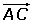

Ejercicios del producto escalar
1Dados los vectores , hallar el vector combinación lineal
2 El vector , ¿se puede expresar como combinación lineal de los vectores ?
3 Qué pares de los siguientes vectores forman una base:

4 Hallar un vector unitario  de la misma dirección del vector .
de la misma dirección del vector .
5 Suponiendo que respecto de la base ortonormal { ,
,  } del plano los vectores tienen como expresiones:
} del plano los vectores tienen como expresiones:

Calcular el valor de k sabiendo que  .
.

6 Dados los vectores  =(2, k) y
=(2, k) y  = (3, −2), calcula k para que los vectores
= (3, −2), calcula k para que los vectores  y
y  sean:
sean:
1 Perpendiculares.
2 Paralelos.
3 Formen un ángulo de 60°.
7 Hallar k si el ángulo que forma  = (3, k) con
= (3, k) con  = (2, −1) vale:
= (2, −1) vale:
1 90°
2 0°
3 45°
8 Suponiendo que respecto de la base ortonormal { ,
,  } del plano los vectores tienen como expresiones:
} del plano los vectores tienen como expresiones:
Calcular el valor de k para que los dos vectores sean ortogonales.
9 Calcular los ángulos del triángulo de vértices: A(6, 0), B(3, 5), C(−1, −1).
10 Calcula la proyección del vector sobre el vector .
11 Calcula la proyección del vector sobre el , siendo A(6, 0), B(3, 5), C(−1, −1).
12 Comprobar que el segmento de une los puntos medios de los lados AB y AC del triángulo: A(3, 5), B(−2, 0), C(0, −3), es paralelo al lado BC e igual a su mitad.
13 Si {  ,
,  } forma una base ortonormal, calcular:
} forma una base ortonormal, calcular:
1  ·
· 
2  ·
· 
3  ·
· 
4  ·
· 
- 1
- 2
- 3
- 4
- 5
- 6
- 7
- 8
- 9
- 10
- 11
- 12
- 13
Ejercicio 1 resuelto
Dados los vectores , hallar el vector combinación lineal
Ejercicio 2 resuelto
El vector , ¿se puede expresar como combinación lineal de los vectores ?


Ejercicio 3 resuelto
Qué pares de los siguientes vectores forman una base:


Ejercicio 4 resuelto
Hallar un vector unitario  de la misma dirección del vector .
de la misma dirección del vector .

Ejercicio 5 resuelto
Suponiendo que respecto de la base ortonormal { ,
,  } del plano los vectores tienen como expresiones:
} del plano los vectores tienen como expresiones:

Calcular el valor de k sabiendo que  .
.


Ejercicio 6 resuelto
Dados los vectores  =(2, k) y
=(2, k) y  = (3, −2), calcula k para que los vectores
= (3, −2), calcula k para que los vectores  y
y  sean:
sean:
1 Perpendiculares.

2 Paralelos.


3 Formen un ángulo de 60°.


Ejercicio 7 resuelto
Hallar k si el ángulo que forma  = (3, k) con
= (3, k) con  = (2, −1) vale:
= (2, −1) vale:
1 90°


2 0°


3 45°


Ejercicio 8 resuelto
Suponiendo que respecto de la base ortonormal { ,
,  } del plano los vectores tienen como expresiones:
} del plano los vectores tienen como expresiones:
Calcular el valor de k para que los dos vectores sean ortogonales.
Ejercicio 9 resuelto
Calcular los ángulos del triángulo de vértices: A(6, 0), B(3, 5), C(−1, −1).


Ejercicio 10 resuelto
Calcula la proyección del vector sobre el vector .
Ejercicio 11 resuelto
Calcula la proyección del vector sobre el , siendo A(6, 0), B(3, 5), C(−1, −1).
Ejercicio 12 resuelto
Comprobar que el segmento de une los puntos medios de los lados AB y AC del triángulo: A(3, 5), B(−2, 0), C(0, −3), es paralelo al lado BC e igual a su mitad.


Ejercicio 13 resuelto
Si {  ,
,  } forma una base ortonormal, calcular:
} forma una base ortonormal, calcular:
1  ·
·  = 1 · 1 · cos 0° = 1
= 1 · 1 · cos 0° = 1
2  ·
·  = 1 · 1 · cos 90° = 0
= 1 · 1 · cos 90° = 0
3  ·
·  = 1 · 1 · cos 90° = 0
= 1 · 1 · cos 90° = 0
4  ·
·  = 1 · 1 · cos 0° = 1
= 1 · 1 · cos 0° = 1
 Ejercicios
Ejercicios